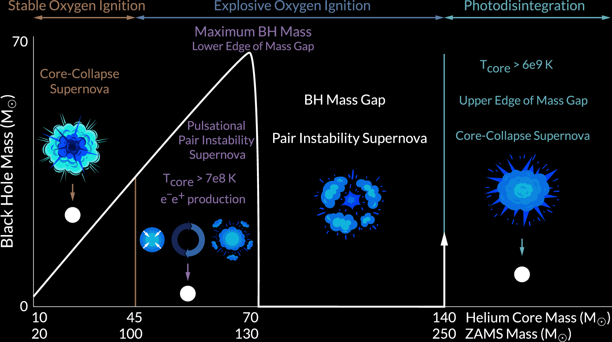
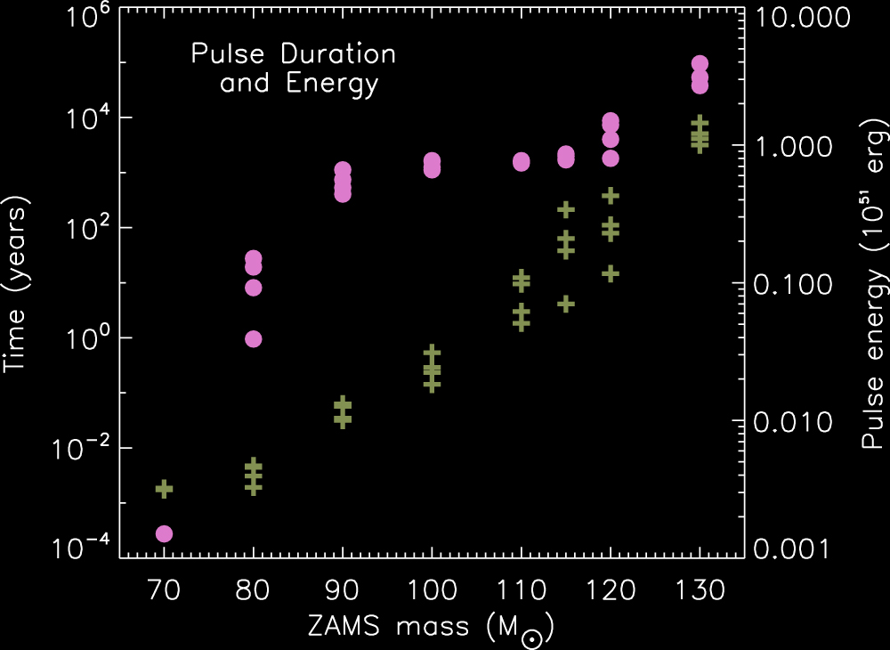

Black holes and their mergers#
Additional Recommended Resource: Black-hole binaries, gravitational waves, and numerical relativity Rev. Mod. Phys. 82, 3069.
Monday, Mar. 31, 2025
astrophysics of stars and planets - spring 2025 - university of arizona, steward observatory
Today’s Agenda#
Announcements (2m)
Reading Overview/Key Points (10m)
ICA 18 - Listening to Binary Black Hole Mergers (25m)
Debrief + Share Results (10m)
Stellar Mass Black Holes#
For this discussion we will be focusing on black holes formed via stellar origin, not primordial black holes potentially created in the early universe via other means.
{kind=link}
Illustration of a single-star BH mass spectrum. Credit: Ebraheem Farag et al 2022 ApJ 937 112.
We can identify three unique physically motivated regions of the BH mass distribution:
From lowest mass to highest mass:
The first boundary is set by the maximum allowed mass of a neutron star. Recall this is EoS dependent. \(M_{ZAMS} ~ 20M_{\odot}\).
Next, is electron–positron pair production regime. Stars with initial mass of \(\gt\sim100M_{\odot}\) can have \(T_{c}\gt7\times10^{8}\) (K). This allows for the production of electron–positron pairs from photons via the \(\gamma + \gamma \rightarrow e^{-} + e^{+}\), the net result being \(\Gamma_1<4/3\) in some regions and the core becoming dynamically unstable prior to O-ignition. This leads to a Pulsational Pair Instability Supernova (PPISN) and eventually a black hole. \(M_{ZAMS} ~ 100M_{\odot}\).
The next boundary, which also defines the peak of the stellar black hole spectrum, is defined by the point at which the pulse initiated by the pair-instability that it completely unbinds the star and no remnant is left behind. This defines the lower limit of the black hole mass gap. \(M_{ZAMS} ~ 130M_{\odot}\).
The next boundary is at \(M_{ZAMS} ~ 250M_{\odot}\) where the core can reach temperatures of \(T_{c}\gt6\times10^{9}\) K and endothermic photodisintegration becomes efficient at absorbing energy and preventing the unbinding of the star until reaching CC and eventually BH formation.
{kind=link}
Mass of final BH as a function of the CO core mass for different metallicities. Credit: R. Farmer et al 2019 ApJ 887 53.
Pulsational Pair-Instability Supernovae (PPISN)#
Steps in a PPISN include:
The core contracts rapidly due to the pair instability and softening of the EoS.
Explosive O- or Si-burning occurs.
The core expands and cools until contracting again due the instabilty.
Occurs on a hydrodynamic or KH timescale depending on the mass of the Helium core.
The duration from first pulse to iron CC can span hours to 10,000 years.
{kind=link}
Pulse duration in years (blue crosses) and total kinetic energy in all of the ejected shells in units of \(10^{51}\) erg (solid green circles) as a function of the main-sequence mass in for full stars of 10% solar metallicity evolved until iron core collapse. Credit: S. E. Woosley 2017 ApJ 836 244.

Announced gravitational-wave detections and black holes and neutron stars previously constrained through electromagnetic observations up to O3 with p_astro > 0.5. Credit: LIGO-Virgo / Aaron Geller / Northwestern University.
Evidence for Dynamical Formation#

Marginal probability distribution of the primary (left) and secondary (right) black holes in the source frame, as inferred through RIFT with NRSur7dq4 model. Credit: Rocha et al, submitted. Shaded region is the PISN mass gap range.
Solutions to this result include the possibility of hierarchical mergers, containing the remnants of previous black-hole mergers.
Promising locations for efficient production of hierarchical mergers include nuclear star clusters and accretion disks surrounding active galactic nuclei.
In-Class Assignment 19#
In-Class Assignment 19 can be found here.